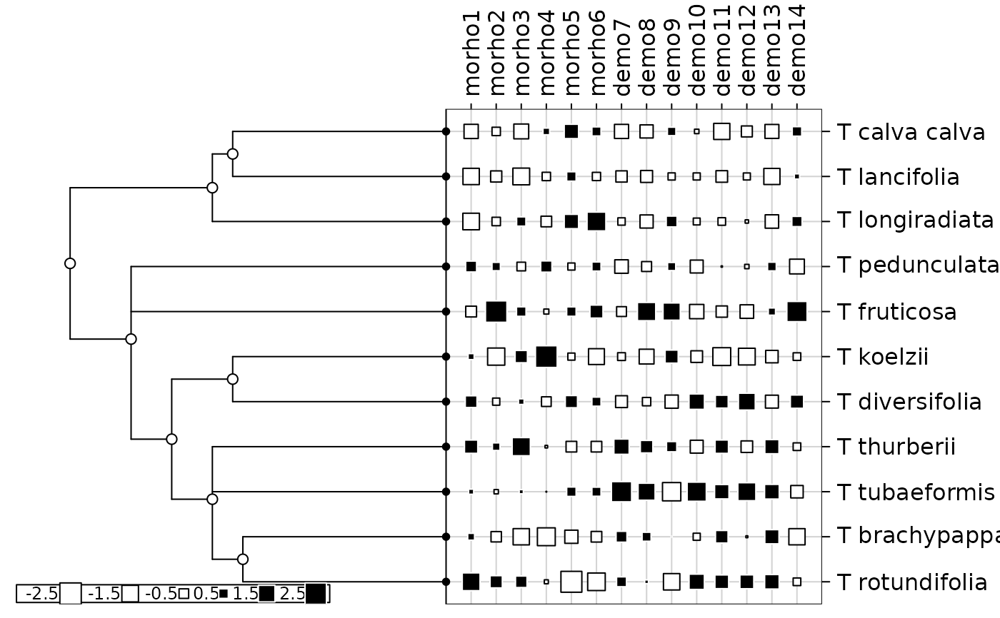

Phylogeny and quantitative traits of flowers
tithonia.RdThis data set describes the phylogeny of 11 flowers as reported by Morales (2000). It also gives morphologic and demographic traits corresponding to these 11 species.
Usage
data(tithonia)Format
tithonia is a list containing the 2 following objects :
- tre
is a character string giving the phylogenetic tree in Newick format.
- tab
is a data frame with 11 species and 14 traits (6 morphologic traits and 8 demographic).
Details
Variables of tithonia$tab are the following ones :
morho1: is a numeric vector that describes the seed size (mm)
morho2: is a numeric vector that describes the flower size (mm)
morho3: is a numeric vector that describes the female leaf size (cm)
morho4: is a numeric vector that describes the head size (mm)
morho5: is a integer vector that describes the number of flowers per head
morho6: is a integer vector that describes the number of seeds per head
demo7: is a numeric vector that describes the seedling height (cm)
demo8: is a numeric vector that describes the growth rate (cm/day)
demo9: is a numeric vector that describes the germination time
demo10: is a numeric vector that describes the establishment (per cent)
demo11: is a numeric vector that describes the viability (per cent)
demo12: is a numeric vector that describes the germination (per cent)
demo13: is a integer vector that describes the resource allocation
demo14: is a numeric vector that describes the adult height (m)
Source
Data were obtained from Morales, E. (2000) Estimating phylogenetic inertia in Tithonia (Asteraceae) : a comparative approach. Evolution, 54, 2, 475--484.
Examples
data(tithonia)
phy <- newick2phylog(tithonia$tre)
tab <- log(tithonia$tab + 1)
table.phylog(scalewt(tab), phy)

gearymoran(phy$Wmat, tab)
#> class: krandtest lightkrandtest
#> Monte-Carlo tests
#> Call: as.krandtest(sim = matrix(res$result, ncol = nvar, byrow = TRUE),
#> obs = res$obs, alter = alter, names = test.names)
#>
#> Number of tests: 14
#>
#> Adjustment method for multiple comparisons: none
#> Permutation number: 999
#> Test Obs Std.Obs Alter Pvalue
#> 1 morho1 0.7321356 4.7351453 greater 0.005
#> 2 morho2 0.3822949 0.4090058 greater 0.301
#> 3 morho3 0.3712126 0.3625453 greater 0.254
#> 4 morho4 0.2572795 -0.9396895 greater 0.808
#> 5 morho5 0.4457180 1.0778810 greater 0.122
#> 6 morho6 0.4089212 0.8734853 greater 0.166
#> 7 demo7 0.4416215 1.1593213 greater 0.094
#> 8 demo8 0.4822195 1.6759833 greater 0.061
#> 9 demo9 0.3043863 -0.4506605 greater 0.626
#> 10 demo10 0.2744296 -0.8386014 greater 0.809
#> 11 demo11 0.4458932 1.4187778 greater 0.091
#> 12 demo12 0.2640213 -0.9419093 greater 0.861
#> 13 demo13 0.6092138 3.4730829 greater 0.006
#> 14 demo14 0.3903768 0.5544790 greater 0.238
#>
gearymoran(phy$Amat, tab)
#> class: krandtest lightkrandtest
#> Monte-Carlo tests
#> Call: as.krandtest(sim = matrix(res$result, ncol = nvar, byrow = TRUE),
#> obs = res$obs, alter = alter, names = test.names)
#>
#> Number of tests: 14
#>
#> Adjustment method for multiple comparisons: none
#> Permutation number: 999
#> Test Obs Std.Obs Alter Pvalue
#> 1 morho1 0.53784586 2.99782378 greater 0.003
#> 2 morho2 0.10046720 0.63476481 greater 0.264
#> 3 morho3 0.07014773 0.42736196 greater 0.330
#> 4 morho4 -0.09223746 -0.60683969 greater 0.757
#> 5 morho5 0.35119692 2.08476063 greater 0.029
#> 6 morho6 0.17659490 1.01557549 greater 0.164
#> 7 demo7 0.44981278 2.60949543 greater 0.016
#> 8 demo8 0.25528857 1.48023440 greater 0.084
#> 9 demo9 -0.01050264 -0.05181095 greater 0.461
#> 10 demo10 -0.09660405 -0.53819922 greater 0.640
#> 11 demo11 0.26985310 1.49200636 greater 0.086
#> 12 demo12 -0.19861554 -1.15037430 greater 0.895
#> 13 demo13 0.63572312 3.43773156 greater 0.002
#> 14 demo14 0.05085783 0.32205582 greater 0.364
#>